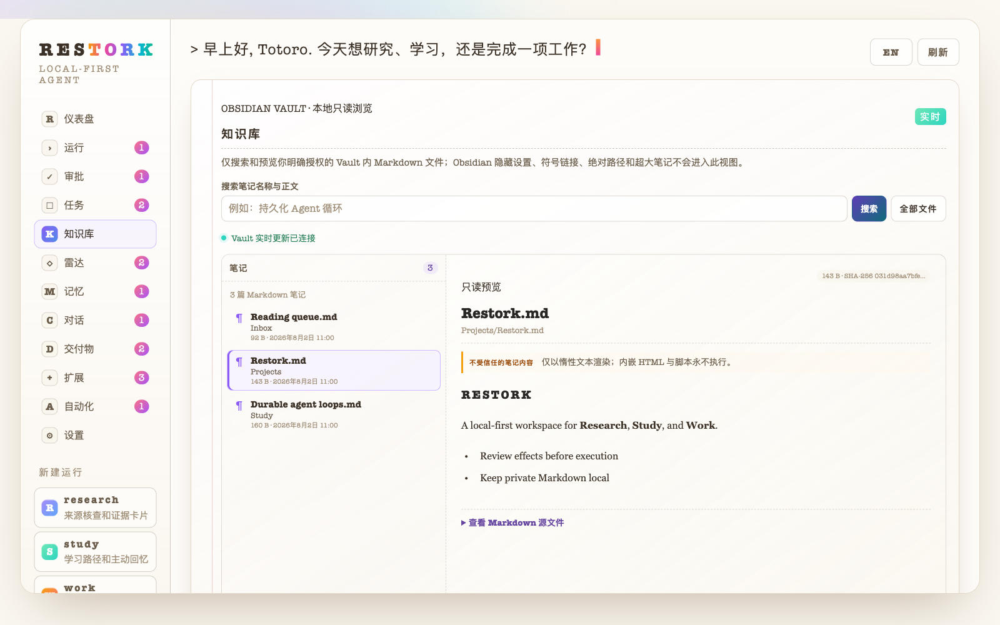
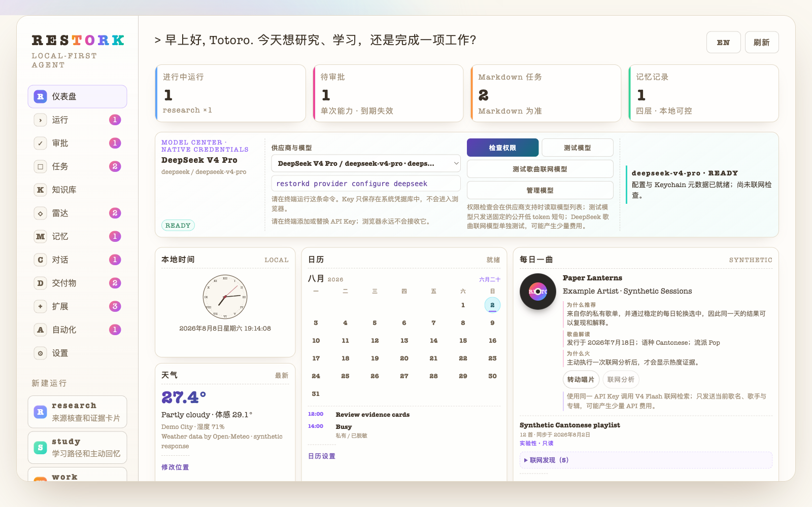

OBSIDIAN KNOWLEDGE · LIVE & LOCAL
让 AI 安全地读懂你的 Obsidian
私有 Markdown 留在本地。查询、只读预览与实时更新，都在你明确授权的 Vault 边界内。
本地检索
只读预览
实时更新

本地知识Local knowledge
上下文预览Context preview
单次审批One-shot approval
确认后执行Sandboxed effect
TRUST IS A PRODUCT FEATURE
一个你敢让它碰文件的 Agent
写文件或调用工具前先给你看、由你确认；工具在操作系统级沙箱中运行，失败、取消与恢复都有记录。
本地知识边界
只读取用户明确授权的 Vault 和工作区，私有 Markdown 不进入公开演示。
LOCAL-FIRST
内容哈希审批
一次批准只绑定一份精确内容；预览发生变化，就必须重新确认。
PREVIEW → APPROVE
OS 级工具沙箱
MCP 工具的网络、写入、输出和运行时间都有明确上限。
BOUNDED TOOLS
可恢复工作流
运行事件、检查点与取消状态可追踪，Core 异常也能被桌面端回收。
RECOVERABLE
github.com/Totoro-qaq/restork
BUILT FOR THE WAY A DAY ACTUALLY UNFOLDS
我不想把研究、学习和工作，拆进十个应用。
所以做了 Restork：它读我的 Obsidian，记得上下文，也陪我把资料、任务和交付物慢慢整理成形。
research找资料、核查来源、整理证据
study学习路径、主动回忆、沉淀笔记
work计划任务、日报周报、PPT 交付

MORE THAN A CHAT BOX
它想照顾的，是你真实的一整天。
早上看一眼邮件和行业动态，白天做研究与学习，晚上把日报、周报和 PPT 好好收尾。
R
S
W
K
M
A
◇行业雷达GitHub 星标项目与 Hacker News
✉
♪
github.com/Totoro-qaq/restork